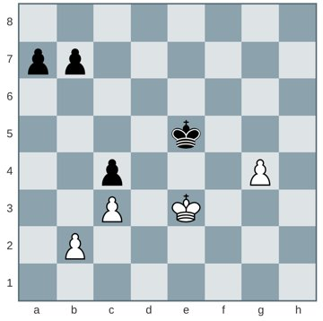
Blazing A Path
In his first column for Chess Life, GM Daniel Naroditsky begins his endings investigations with a look at pawn-only endgames.
GM Daniel Naroditsky · GM Robert James Fischer – GM Arthur Bisguier
All 70 columns. Read each one online with a live board you can click through, or download the EPUB for your e-reader.

In his first column for Chess Life, GM Daniel Naroditsky begins his endings investigations with a look at pawn-only endgames.
GM Daniel Naroditsky · GM Robert James Fischer – GM Arthur Bisguier
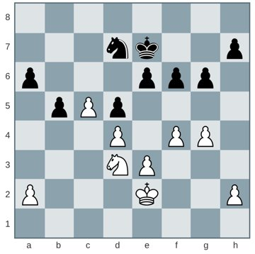
As in pawn endings, knight endings require precise calculation, else disaster lurks around the corner.
GM Daniel Naroditsky · Harry Nelson Pillsbury – Isidor Gunsberg
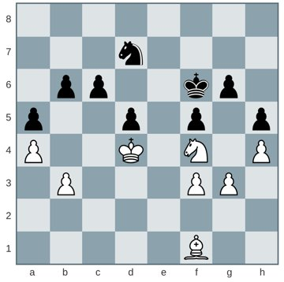
A titanic bishop versus knight battle
GM Daniel Naroditsky · GM Roman Dzindzichashvili – GM Lubomir Kavalek
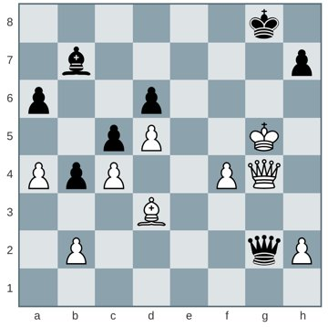
An example of saving a draw from a seemingly disastrous position.
GM Daniel Naroditsky · GM Alexander Onischuk – GM Daniel A. Naroditsky
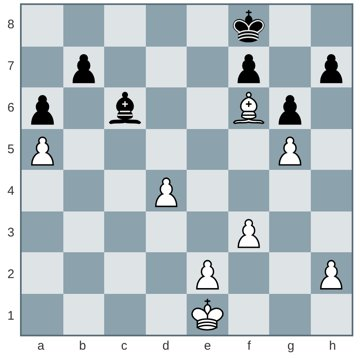
“It is a cliche that most cliches are true, but then like most cliches, that cliche is untrue.” —Stephen Fry
GM Daniel Naroditsky · GM Gata Kamsky – GM Aleksandr Lenderman
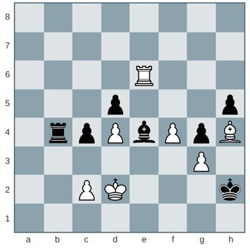
GM Fabiano Caruana’s opening preparation and calculating ability are world class, but one does not become a super-grandmaster without exceptional endgame technique to complete the package.
GM Daniel Naroditsky · GM Fabiano Caruana – GM Magnus Carlsen
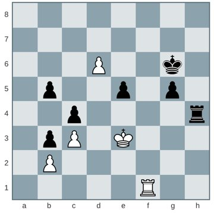
“[Rook endings] are often so complex, so replete with tactical nuances and daunting calculation tasks that even grandmasters tend to slip up at critical junctures.”
GM Daniel Naroditsky · IM Edmar Mednis – GM Arthur Bisguier
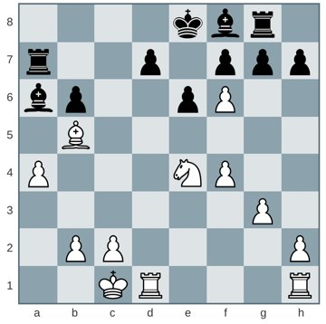
The material imbalance of rook against bishop can be improbably favorable for the defending side.
GM Daniel Naroditsky · GM Jose Luis Fernandez Garcia – GM Sam Shankland
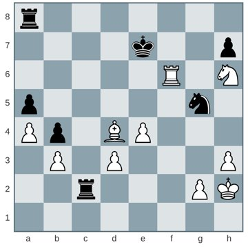
Shortly after becoming Chess Life’s endgame columnist, GM Daniel Naroditsky played what he describes as “the most fascinating endgame … in my chess career.”
GM Daniel Naroditsky · Baadur Jobava – Daniel Naroditsky
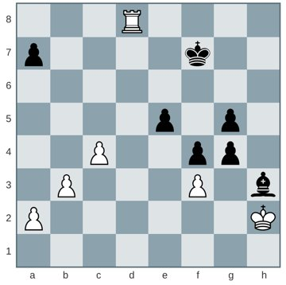
A virtually unknown endgame battle from 1972 that has a little bit of everything going on.
GM Daniel Naroditsky · Michael Stean – Adolf Herzog Greifensee, 1972
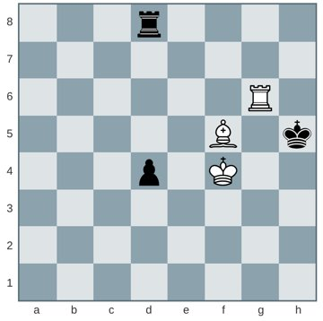
A challenging endgame from the 2015 Tata Steel event in Wijk aan Zee.
GM Daniel Naroditsky · GM Erwin L’Ami – GM Bart Michiels
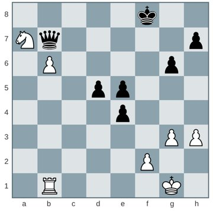
An endgame featuring many beautiful motifs, twists-and-turns, and instructive moments.
GM Daniel Naroditsky · FM Joel Salman – IM Jay Bonin
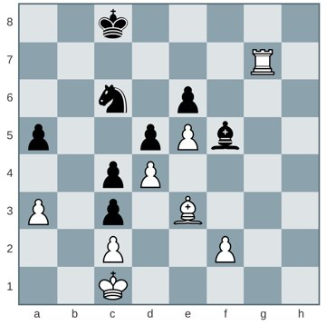
Naroditsky had a brutal experience at the 2015 U.S. Championship, but here is an example of what went right.
GM Daniel Naroditsky · GM Daniel Naroditsky – GM Conrad Holt
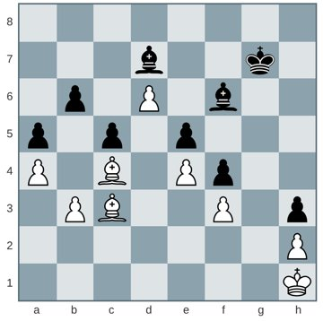
The most instructive games are not always the most aesthetically pleasing.
GM Daniel Naroditsky · GM Arnold Denker – GM Samuel Reshevsky
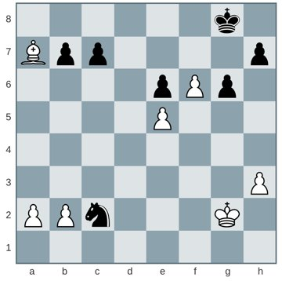
While long-time U.S. Champion Frank Marshall had a deserved reputation for his sharp tactical abilities, he has something to teach us in the endgame as well.
GM Daniel Naroditsky · Mikhail Chigorin – Frank Marshall
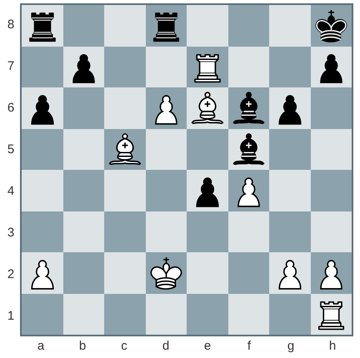
Taking a look at the endgame virtuosity of our recently deceased former U.S. champion
GM Daniel Naroditsky · GM Walter Browne – GM Ljubomir Ftacnik
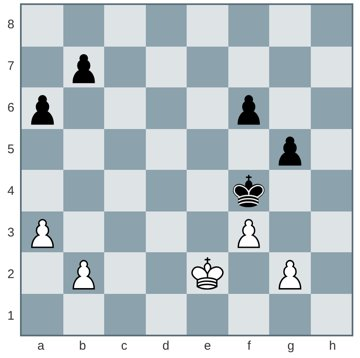
Pawn endgames and premature resignation
GM Daniel Naroditsky · GM Tiger Hillarp Persson – GM Markus Ragger
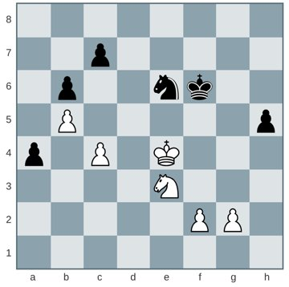
Picking up the theme of Joel Benjamin’s recent book, we look at more examples of liquidating to a pawn endgame
GM Daniel Naroditsky · GM Daniel Naroditsky – GM Robert Hovhannisyan
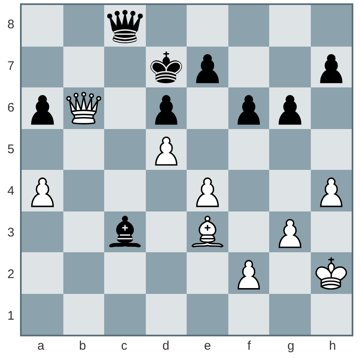
How adopting Teddy Roosevelt’s attitude of unbridled, unwavering resilience in the face of adversity can improve your endgame play.
GM Daniel Naroditsky · GM Fabiano Caruana – IM Kannappan Priyadharshan
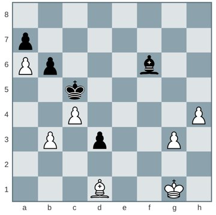
How to use common sense, intuition, and calculation when you don’t know the theory.
GM Daniel Naroditsky · Louis-Charles Mahé de Labourdonnais – Alexander McDonnell
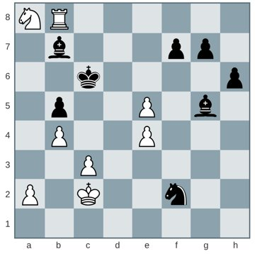
Remembering Emory Tate
GM Daniel Naroditsky · FM Emory Tate – FM Maurice Ashley
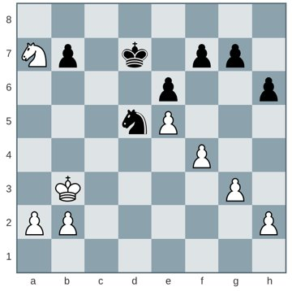
We real cool. We Left school. We Lurk late. We Strike straight. We Sing sin. We Thin gin. We Jazz June. We Die soon. ~Gwendolyn Brooks, 1960
GM Daniel Naroditsky · GM Baris Esen – IM Eesha Karavade
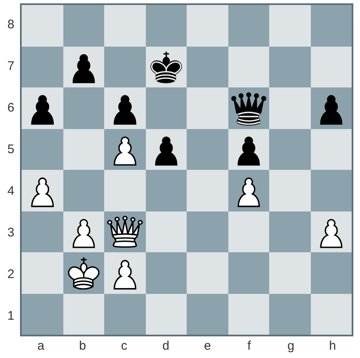
When faced with a trade, don’t make a gut decision.
GM Daniel Naroditsky · GM Magnus Carlsen – GM Hou Yifan
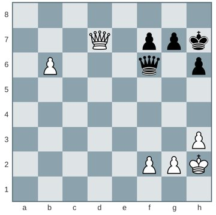
Avoiding the ugly specter of perpetual check when a win is in sight.
GM Daniel Naroditsky · GM Alex Sherzer – FM Istvan Almasi
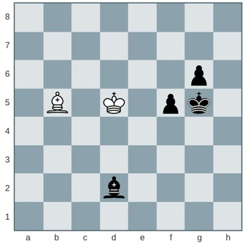
A false friend in chess is an idea, method, or concept that is valid in one type of position, but that a player mistakenly applies in another.
GM Daniel Naroditsky · GM Jon Ludvig Hammer – GM Nils Grandelius
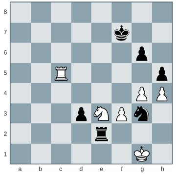
GM Irina Krush and WFM Jennifer Yu’s epic endgame at the 2016 U.S. Women’s Championship
GM Daniel Naroditsky · GM Irina Krush – WFM Jennifer Yu
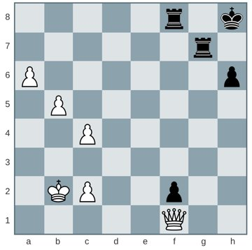
Correspondence chess can offer useful endgame lessons for over-the-board players, especially about balancing calculation and intuition.
GM Daniel Naroditsky · Georg Halvax – 2020)
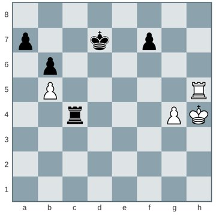
Looking back at the 1946 U.S. Championship held during Chess Life’ s inaugural year.
GM Daniel Naroditsky · Gustave Drexel – Israel Horowitz
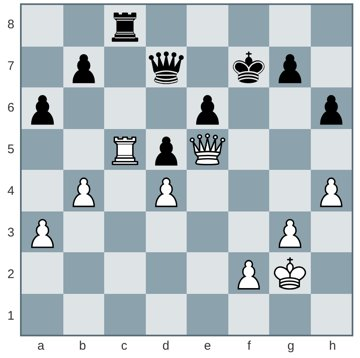
Decisions, decisions. Sometimes you just have to take the plunge.
GM Daniel Naroditsky · IM Rasmus Svane – GM Daniel Naroditsky
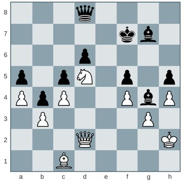
When you find yourself in a losing endgame, you must look for defensive resources until the bitter end.
GM Daniel Naroditsky · GM Anatoly Karpov – GM Viswanathan Anand
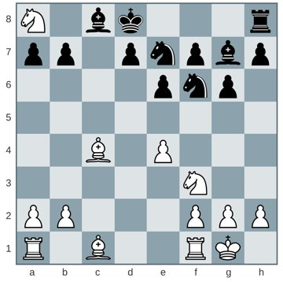
“If you are distressed by anything external, the pain is not due to the thing itself, but to your estimate of it; and this you have the power to revoke at any moment.” ~Marcus Aurelius, Meditations
GM Daniel Naroditsky · Weston Leavens – Daniel Naroditsky
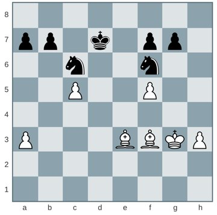
Analyzing an ending that won’t win a tournament’s brilliancy prize, but that will bring the dedicated analyst a great deal of instructional value and satisfaction.
GM Daniel Naroditsky · GM Magnus Carlsen – GM Hikaru Nakamura
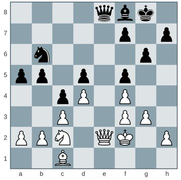
“Play the board or play the opponent?” is a dilemma that goes back at least to Ruy Lopez. Here is a modern take on it.
GM Daniel Naroditsky · IM Pierre Bailet – GM Daniel Naroditsky
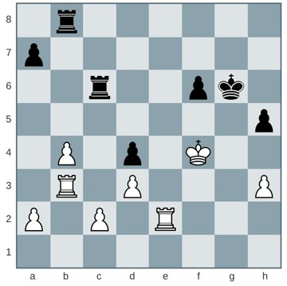
With few pieces on the board, even grandmasters can’t take king safety for granted.
GM Daniel Naroditsky · GM Benjamin Bok – GM Vladimir Dobrov
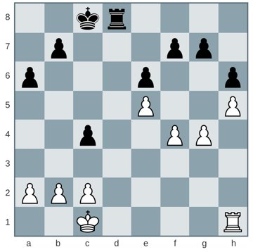
In the endgame, the role of nearly imperceptible positional characteristics is magnified a hundredfold.
GM Daniel Naroditsky · Arturo Gonzalez Pruneda – Enrique Alvarez Fernandez
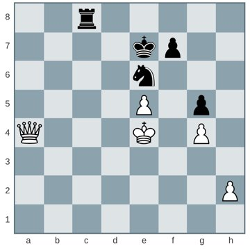
A fortress is an invaluable defensive tool, especially in the endgame.
GM Daniel Naroditsky · Christobal Dominguez – IM Rene Letelier Martner
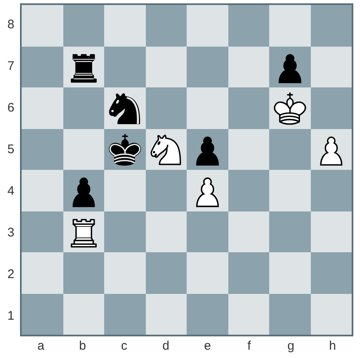
This month, an ending selected for its beauty and instructive value.
GM Daniel Naroditsky · GM Varuzhan Akobian – GM Daniel Naroditsky
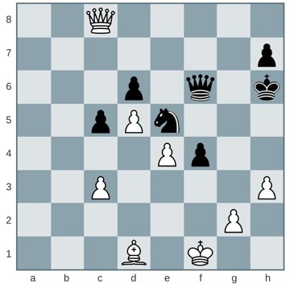
Remembering one of Bisguier’s greatest endgame performances
GM Daniel Naroditsky · Arthur Bisguier – Weaver Adams
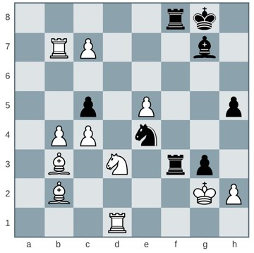
The more you believe in miracles, the more you doggedly search for resources even when all of the odds are stacked against you, the more Caissa will smile upon you.
GM Daniel Naroditsky · GM Ray Robson – IM John Daniel Bryant
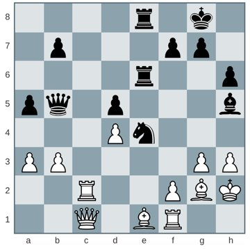
Examining the final stage of Tarjan’s defeat of Kramnik
GM Daniel Naroditsky · GM James Tarjan – GM Vladimir Kramnik
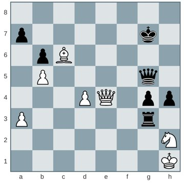
This month, a little bit of endgame theater
GM Daniel Naroditsky · GM Paul Keres – GM Bobby Fischer Curacao, 1962
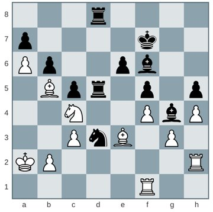
Taking a look at one of the most fascinating endgames of recent times.
GM Daniel Naroditsky · GM Magnus Carlsen – GM Maxime Vachier-Lagrave
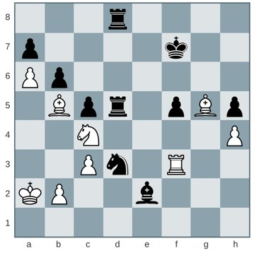
If you are late to the party and have not read last month’s column, doing so—while not strictly necessary to follow this month’s notes—would greatly enhance your experience.
GM Daniel Naroditsky · GM Magnus Carlsen – GM Maxime Vachier-Lagrave
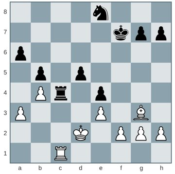
The teenaged William Lombardy shows his talents in the World U-20 Championship.
GM Daniel Naroditsky · William Lombardy – Erkki Makelainen
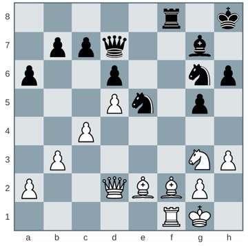
When trying to find your plan in an endgame, follow the KISS principle: Keep It Simple Stupid.
GM Daniel Naroditsky · GM Anatoly Karpov – GM Jan Smejkal
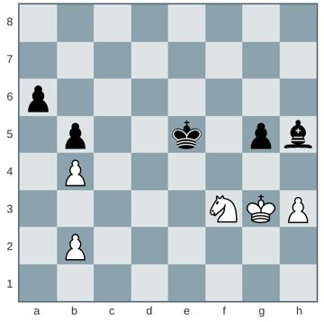
For your consideration, the world champion’s defensive gem
GM Daniel Naroditsky · GM Vladimir Fedoseev – GM Magnus Carlsen
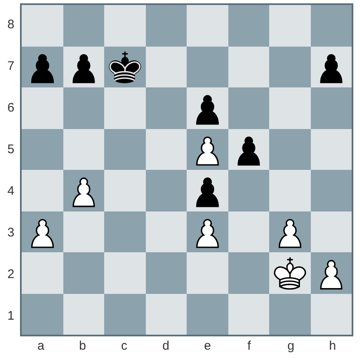
The PRO Chess League provides a feast for endgame lovers.
GM Daniel Naroditsky · GM Jorden Van Foreest – Dan Smith
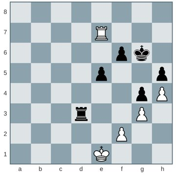
Chess psychology and objective evaluation are two entirely different things.
GM Daniel Naroditsky · IM Sunil Dhopade Swapnil – GM Daniil Lintchevski
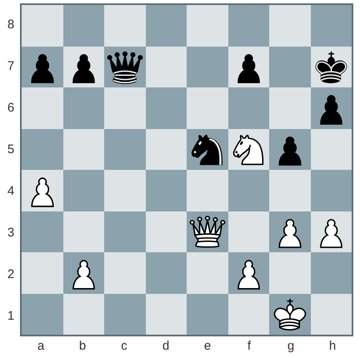
Attention to detail—in the sense of provoking and holding your opponent accountable for seemingly insignificant errors—is an indelible component of practical endgame mastery.
GM Daniel Naroditsky · GM Fabiano Caruana – GM Arkadij Naiditsch
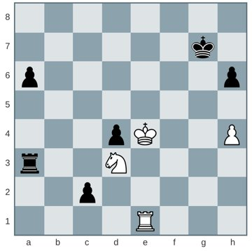
Shankland’s road to the title included a crucial endgame victory.
GM Daniel Naroditsky · GM Samuel Shankland – GM Yaroslav Zherebukh
Chess psychology and objective evaluation are two entirely different things.
GM Daniel Naroditsky · GM S.P. Sethuraman – IM Daniel Naroditsky
A curious endgame reminds us to delve past superficial observations and form evaluations steeped in deeper thought.
GM Daniel Naroditsky · GM David Bronstein – GM Gideon Stahlberg
Endgames carry remarkable entertainment value, especially when they are contested between top players and feature unique imbalances.
GM Daniel Naroditsky · GM Magnus Carlsen – GM Sergey Karjakin
It’s easy to lose track of your objectives when you get caught up in self-narration.
GM Daniel Naroditsky · GM Vlastimil Hort – Hans-Joachim Deuker
Even when the logic is flawless, the smallest imprecision in execution bears calamitous consequences.
GM Daniel Naroditsky · GM Fabiano Caruana – GM Shakhriyar Mamedyarov
When you are not sure how to evaluate a position, sometimes it’s better not to evaluate it.
GM Daniel Naroditsky · GM Ray Robson – GM Dariusz Swiercz
When you sense that the result of the game is hanging in the balance, do not put off important decisions.
GM Daniel Naroditsky · GM Hikaru Nakamura – GM Wesley So
Humans make plenty of illogical moves, but computers are motivated by an ironclad chain of reasoning.
GM Daniel Naroditsky · GM Vladimir Kramnik – GM Sam Shankland
Understanding the nature of transitions is a key component of practical endgame training.
GM Daniel Naroditsky · GM Anton Smirnov – Kangaroos”)
Vera Menchik, the first women’s world champion, challenged the strongest male players of her day.
GM Daniel Naroditsky · Reginald Pryce Michell – Vera Menchik Scarborough, 05.26.1928
Sometimes less is more.
GM Daniel Naroditsky · GM Samuel Sevian – GM Lenier Dominguez Perez
Carlsen possesses an uncanny ability to find moves that burden his opponent and require a great deal of calculation.
GM Daniel Naroditsky · GM Francisco Vallejo Pons – GM Magnus Carlsen
Good annotations balance objectivity with beauty and practical value.
GM Daniel Naroditsky · GM Zhongyi Tan – GM Kateryna Lagno
The search for truth in a position can follow varied and various paths.
GM Daniel Naroditsky · GM Peter Svidler – GM Evgeny Postny
The dangers of delving too deeply into one particular variation
GM Daniel Naroditsky · GM Nico Georgiadis – GM Santosh Gujrathi Vidit
Remembering GM Pal Benko
GM Daniel Naroditsky · GM Pal Benko – GM Dragutin Sahovic
It is exceedingly seldom that all roads lead to Rome—or is it?
GM Daniel Naroditsky · GM Luke McShane – GM Fabiano Caruana
Sometimes saving a game feels no less sweeter than winning one.
GM Daniel Naroditsky · GM Jeffery Xiong – GM Daniel Naroditsky
Intuitive assumptions without rigorous calculation can lead to tragic consequences.
GM Daniel Naroditsky · GM Maxime-Vachier Lagrave –
Siegbert Tarrasch’s maxim is put to the test.
GM Daniel Naroditsky · IM Roberto Martin Del Campo – Richard Francisco
No articles match your search.